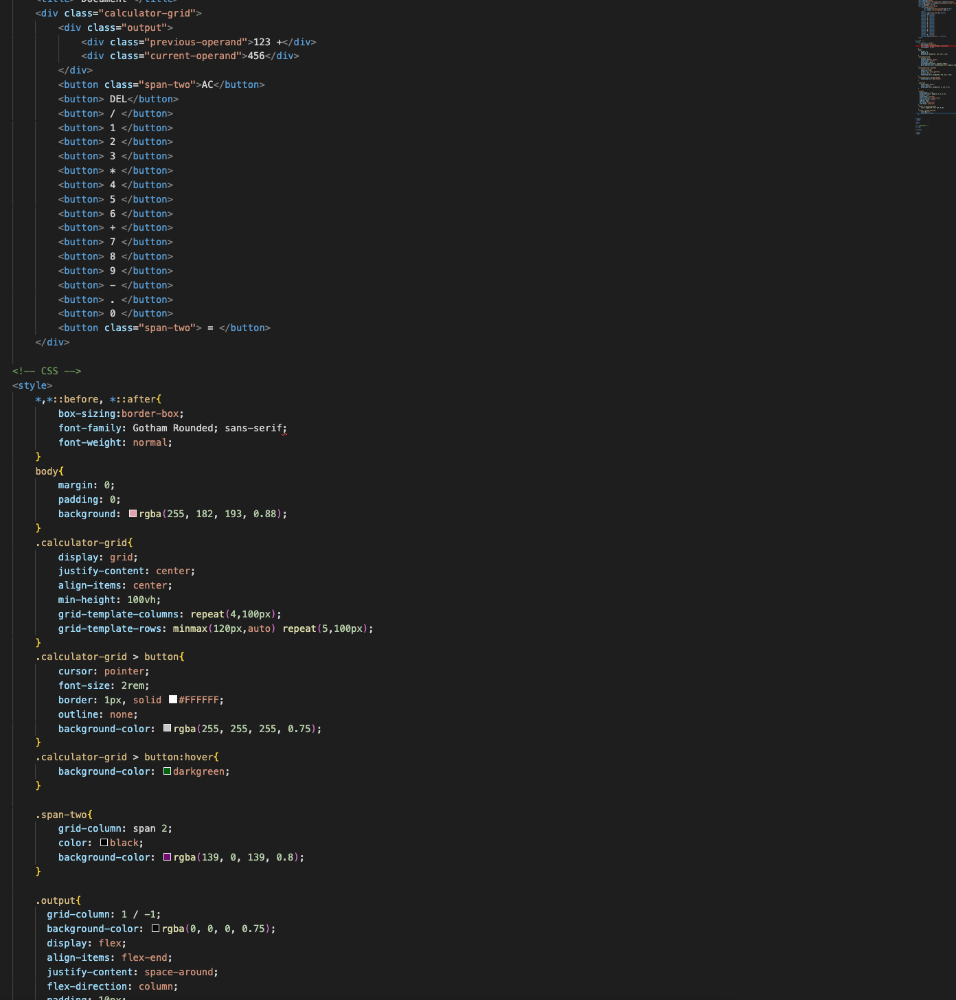

idea: scrollytelling. Using SVG images that I illustrate and adding those to webpage.
I want the images to animate using CSS, and every time someone scrolls, new images and text show up.
I want the scroll of the webpage to control everything. Nothing needs to be clicked for the webpage to function.
inspiration websites:
Main Inspiration :Most realistic and possible code and design I can make
Cool inspiration :Animated ojects that move regardless of where the page is.
Clean Inspiration :A clean minimal image, more text-heavy webpage controlled by scroll.
Color Inspiration:love the futuristic images popping out of the screen.
Scroll Trigger :Animated objects move with scroll trigger
resources

Personally, I don't excel in Javacript. For me to get fancy and try different programs could end in a mess. I know I want to make
something functional but fun in color. I decided to make a calculator! While this function and project is very beginner Javascript.
For me, I am still learning Javascript attributes and functions. I know this will teach me the beginner Javascript functions I need to know.
While also making something fun, interactive, and colorful.
link to final project